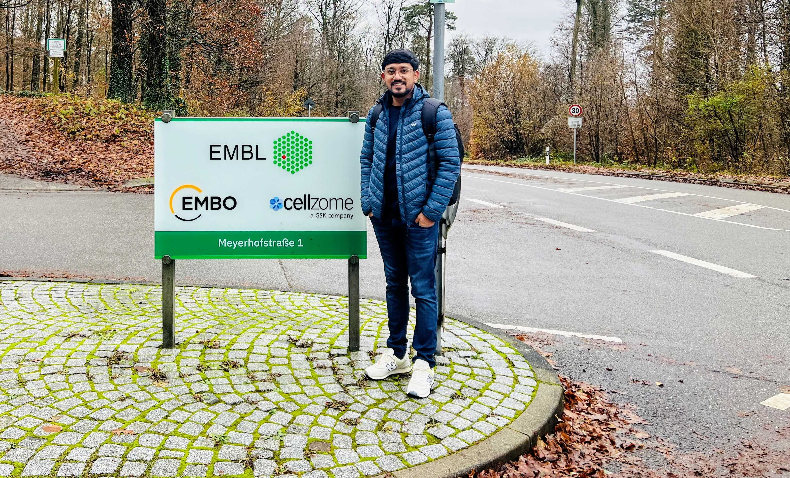
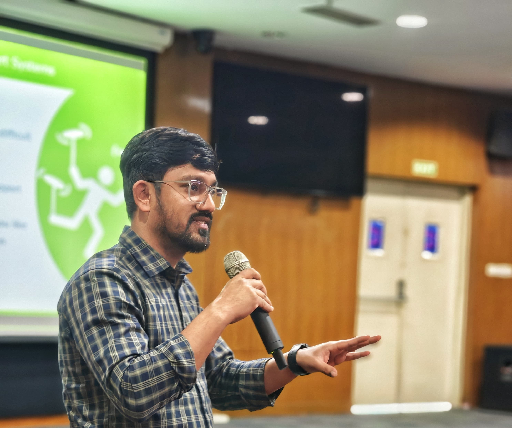
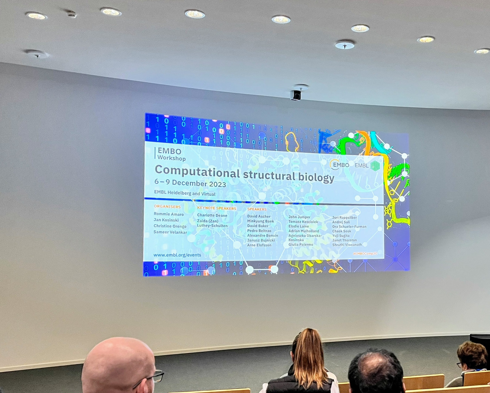
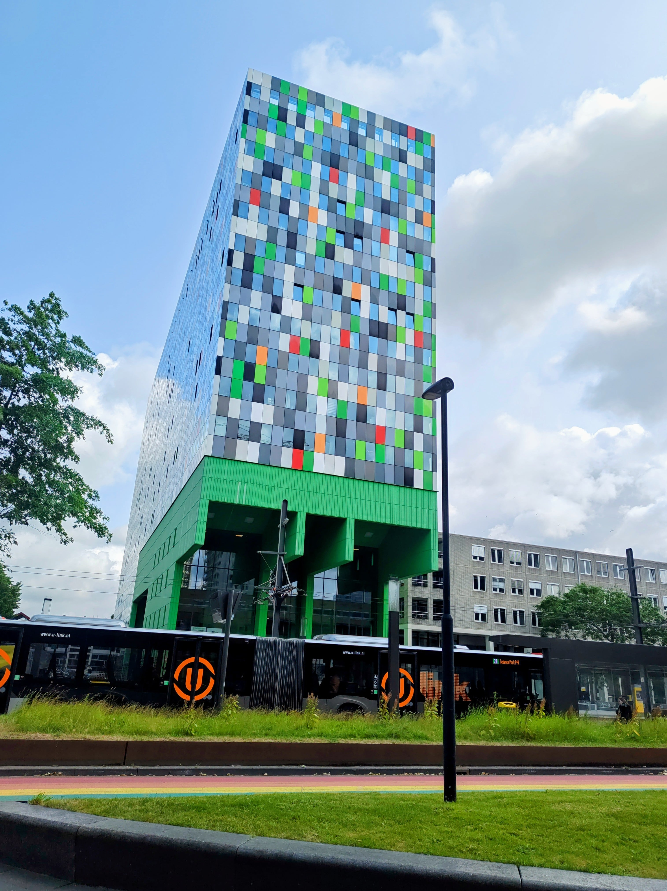
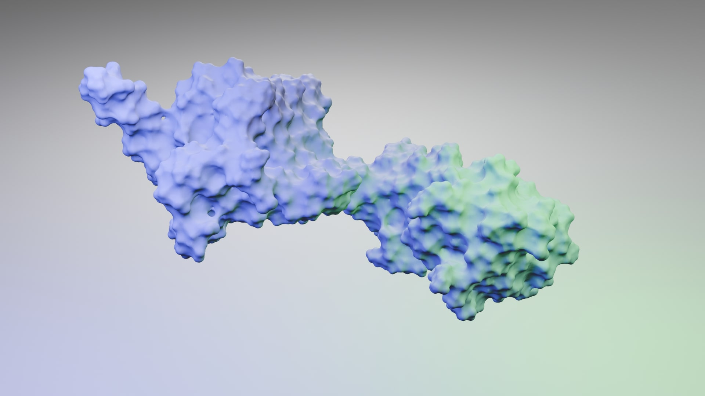
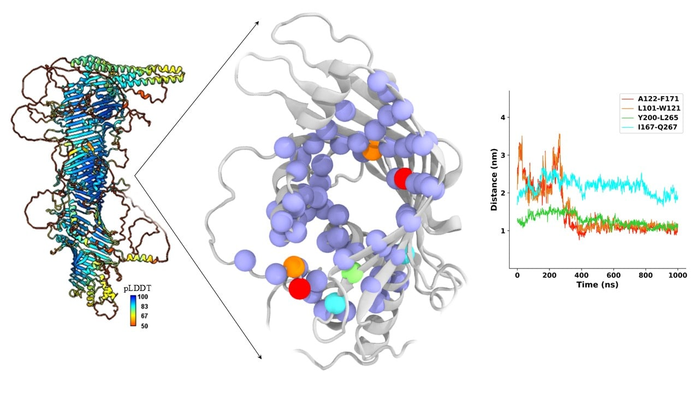
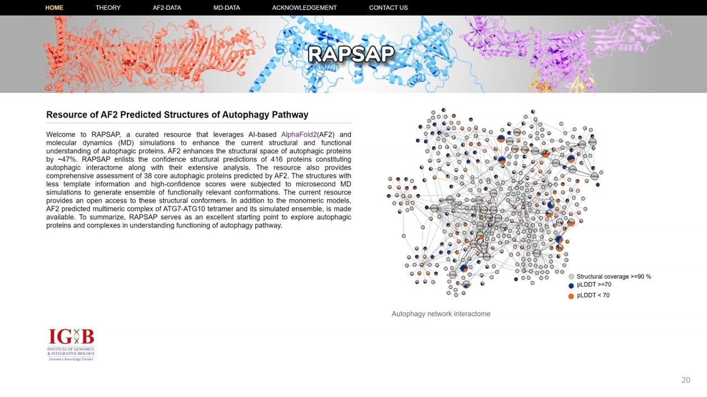
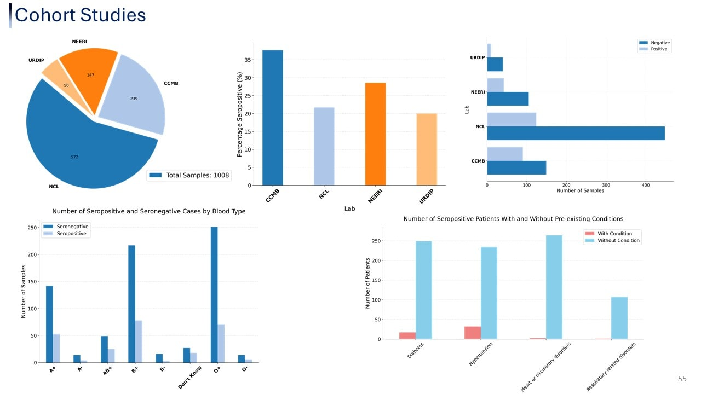

Post Doctoral Researcher
Faculty of Bètasciences
Utrecht University
The Netherlands
SHANTANU KHATRI
Computational Biologist with extensive experience in protein structural modeling, molecular
dynamics simulations, multi-omics and high-performance computing. Proficient in Python and adept at designing and formulating interdisciplinary
in silico workflows on computational clusters. Experienced in
processing, analyzing, and interpreting high-throughput complex
biomolecular data.
Download CV
Intro




With biology at the core and computation as a passion, I am a Computational Biologist(Ph.D., CSIR–Senior Research Fellow) proficient in protein structural modeling,
complex biomolecular simulations, and high-performance analysis. My work integrates multi-omics data, AI-driven bioinformatics,
and structural biology to advance discoveries in biological science. Passionate about interdisciplinary research, I aim to bridge
computational and experimental biology to develop innovative solutions for scientific discoveries.
My expertise lies in biomolecular simulations to understand protein dynamics at an atomistic level,
leveraging machine learning applications for protein structure prediction. I am also proficient at designing
large-scale computational pipelines that integrate complex molecular data and multi-omics, and AI-driven models
to answer fundamental questions in biology. In addition to my research , I have a strong passion for programming,
with expertise in Python and its applications in computational biology. I thrive in interdisciplinary collaborations,
working alongside experimental biologists to validate computational findings and translate them into meaningfull insights. I’m
also deeply enthusiastic about science communication and connecting with people
across disciplines.
Outside of science, I enjoy table-tennis and hiking, always seeking new challenges and adventures in nature.
P.S. My idea of meditation? Designing and rendering molecular visualizations!
Work

Protein predictions: Leveraged AlphaFold2-multimer pipeline to predict
high-order oligomeric protein assemblies regulating conjugation machinery in
human autophagy and to explore their detailed structural architecture.
Biomolecular simulations: Investigated structural differences across
various functional oligomeric forms of E1 enzyme ATG7 in complex with ubiquitin-like proteins (UBLs) and E2-like enzymes,
leveraging molecular dynamics simulations, revealing structural and mechanistic insights. (Malhotra & Khatri et al., Autophagy, 2023)
In-silico mutations: Designed in-silico mutants of the ATG7–ATG10 tetrameric
complex to identify and validate key binding regions, assessing their effects
on protein–protein interactions and elucidating the role of intrinsically disordered regions (IDRs) in mediating complex stability.
Experimental design & validations: Designed an integrated workflow combining in-silico predictions with in-vitro and
biophysical experiments to validate key binding regions and interaction (Malhotra & Khatri et al., Autophagy, 2023).

Cavity proteins: Explored the bipartite membrane protein ATG2A,
revealing its architecture, and identified dynamic transitions of
cavity-lining residues through simulations, suggesting their
critical role in regulating lipid transfer.

Resource development: Developed web-resource RAPSAP, a curated
database providing comprehensive structural information on the
complete human autophagy protein interactome containing ~416 proteins (Malhotra & Khatri et al., Autophagy, 2023).

Cohort studies: Conducted serological testing on 1008 voluntary
participants as part of the Phenome India Cohort Project (CSIR-800),
utilizing Elecsys Anti-SARS-CoV-2 electrochemiluminescence
immunoassay (ECLIA) for qualitative antibody detection followed by curation and analysis of clinical data.
Skills
Multiscale protein modeling & dynamics - Modeling and analyzing protein dynamics and interactions in high-order protein assemblies and protein-membrane systems and utilizing molecular dynamics simulations with GROMACS and CHARMM.
AI-based protein modeling & docking - Modeling proteins using AI-based pipelines like AlphaFold, ProteinMPNN, and RFdiffusion in HPC and performing protein-ligand docking with HADDOCK and AutoDock.
Molecular visualization - Visualizing and presenting molecular structures using ChimeraX, PyMOL, VMD, and Blender.
Free energy calculations & structural analysis - Performing MM-PBSA (Molecular Mechanics-Poisson–Boltzmann Surface Area) free energy calculations and analyzing protein structural networks in high-order oligomers.
Computational workflow automation - Scripting and automating computational workflows using Python, Unix, and Bash and utilizing libraries like Pandas, Scikit-learn, NumPy, Biopython, and MDAnalysis.
High-Performance Computing (HPC) & large-scale computations - Running large-scale computations on HPC clusters using SLURM and PBS.
Containerization & cloud computing - Creating and deploying Docker, Singularity and Apptainer for CPU/GPU-based computations on the NVIDIA DGX platform and executing scientific and drug discovery workflows on AWS.
Experimental validation & biophysical techniques - Hands-on experience with experimental design and validation techniques and performing Isothermal Titration Calorimetry (ITC) and protein purification.
Multi-omics data integration & analysis - Building and optimizing pipelines for multi-omics data integration, including proteomics, metabolomics, and Next-Generation Sequencing (NGS).
Bioinformatics database & web development - Managing databases and developing web-based bioinformatics resources.
AI/ML & Deep learning in bioinformatics - Applying AI, machine learning (ML), and deep learning for biological data analysis and being proficient in ML frameworks such as TensorFlow and PyTorch.